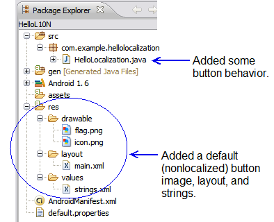
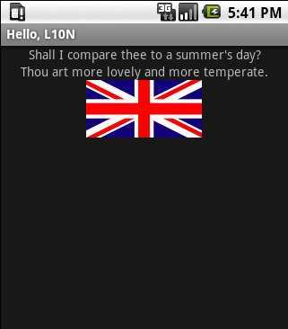
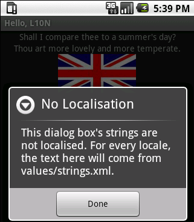
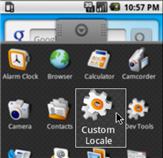
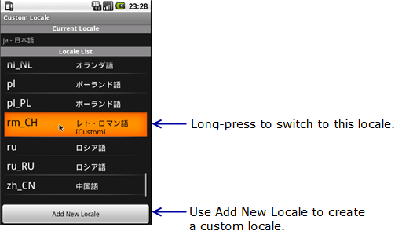
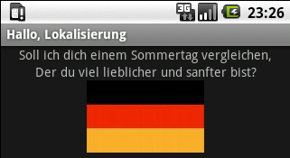
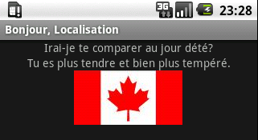
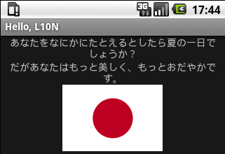
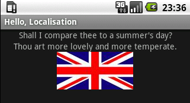

In this tutorial, we will create a Hello, L10N application that uses the
Android framework to selectively load resources. Then we will localize the
application by adding resources to the res/ directory.
This tutorial uses the practices described in the Localization document.
The first version of the Hello, L10N application will use only the default
resource directories (res/drawable, res/layout, and
res/values). These resources are not localized — they are the
graphics, layout, and strings that we expect the application to use most often.
When a user runs the application in the default locale, or in a locale that the
application does not specifically support, the application will load resources
from these default directories.
The application consists of a simple user interface that displays two
TextView objects and a Button image with a
background image of a national flag. When clicked, the button displays an
AlertDialog object that shows additional text.
For this application, the default language will be British English and the default location the United Kingdom.
The basic project contains a res/ directory with
subdirectories for the three most common types of resources: graphics
(res/drawable/), layouts (res/layout/) and strings
(res/values/). Most of the localization work you do later in this
tutorial will involve adding more subdirectories to the res/
directory.
res/layout/main.xml file and replace it with the
following code:
<?xml version="1.0" encoding="utf-8"?>
<LinearLayout xmlns:android="http://schemas.android.com/apk/res/android"
android:orientation="vertical"
android:layout_width="fill_parent"
android:layout_height="fill_parent"
>
<TextView
android:layout_width="fill_parent"
android:layout_height="wrap_content"
android:gravity="center_horizontal"
android:text="@string/text_a"
/>
<TextView
android:layout_width="fill_parent"
android:layout_height="wrap_content"
android:gravity="center_horizontal"
android:text="@string/text_b"
/>
<Button
android:id="@+id/flag_button"
android:layout_width="wrap_content"
android:layout_height="wrap_content"
android:layout_gravity="center"
/>
</LinearLayout>
The LinearLayout has two TextView objects that will
display localized text and one Button that shows a flag.
The layout refers to resources that need to be defined.
res/values/strings.xml file and replace it with the following code:<?xml version="1.0" encoding="utf-8"?>
<resources>
<string name="app_name">Hello, L10N</string>
<string name="text_a">Shall I compare thee to a summer"'"s day?</string>
<string name="text_b">Thou art more lovely and more temperate.</string>
<string name="dialog_title">No Localisation</string>
<string name="dialog_text">This dialog box"'"s strings are not localised. For every locale, the text here will come from values/strings.xml.</string>
</resources>
This code provides British English text for each string that the application will use. When we localize this application, we will provide alternate text in German, French, and Japanese for some of the strings.
res/drawable folder by
saving flag.png as
res/drawable/flag.png. When the application is not localized, it
will show a British flag.src/ directory) and add the
following code inside the onCreate() method (after
setContentView).
// assign flag.png to the button, loading correct flag image for current locale
Button b;
(b = (Button)findViewById(R.id.flag_button)).setBackgroundDrawable(this.getResources().getDrawable(R.drawable.flag));
// build dialog box to display when user clicks the flag
AlertDialog.Builder builder = new AlertDialog.Builder(this);
builder.setMessage(R.string.dialog_text)
.setCancelable(false)
.setTitle(R.string.dialog_title)
.setPositiveButton("Done", new DialogInterface.OnClickListener() {
public void onClick(DialogInterface dialog, int id) {
dialog.dismiss();
}
});
final AlertDialog alert = builder.create();
// set click listener on the flag to show the dialog box
b.setOnClickListener(new View.OnClickListener() {
public void onClick(View v) {
alert.show();
}
});
Tip: In Eclipse, use Ctrl-Shift-O (Cmd-Shift-O, on Mac) to find and add missing import packages to your project, then save the HelloL10N.java file.
The code that you added does the following:
res/drawable/flag.png (the
British flag) as the flag icon, no matter what the locale. Once we add more
flags for different locales, this code will sometimes assign a different flag.
AlertDialog object and sets a click listener so that when the
user clicks the button, the AlertDialog will display.
We will not localize the dialog text;
the AlertDialog will always display the dialog_text that is located
within res/values/strings.xml. The project structure now looks like this:
Tip: If you will want to run the application on
a device and not just on an emulator, open AndroidManifest.xml and
add android:debuggable="true" inside the
<application> element. For information about setting up the
device itself so it can run applications from your system, see Developing on a Device.
Save the project and run the application to see how it works. No matter what locale your device or emulator is set to, the application runs the same way. It should look something like this:
| The unlocalized application, running in any locale: | After clicking the flag, in any locale: |
|---|---|
|  |  |
The first step in localizing an application is to plan how the application will render differently in different locales. In this application, the default locale will be the United Kingdom. We will add some locale-specific information for Germany, France, Canada, Japan, and the United States. Table 1 shows the plan for how the application will appear in different locales.
Table 1
| Region / Language |
United Kingdom | Germany | France | Canada | Japan | United States | Other Location |
|---|---|---|---|---|---|---|---|
English |
British English text; British flag (default) | - | - | British English text; Canadian flag | - | British English text; U.S. flag | British English text; British flag (default) |
| German | - | German text for app_name, text_a and
text_b; German flag |
- | - | - | - | German text for app_name, text_a and
text_b; British flag |
| French | - | - | French text for app_name, text_a and
text_b; French flag |
French text for app_name, text_a and
text_b; Canadian flag |
- | - | French text for app_name, text_a and
text_b; British flag |
| Japanese | - | - | - | - | Japanese text for text_a and text_b; Japanese
flag |
- | Japanese text for text_a and text_b; British
flag |
| Other Language | - | - | - | - | - | - | British English text; British flag (default) |
Note that other behaviors are possible; for example, the application could support Canadian English or U.S. English text. But given the small amount of text involved, adding more versions of English would not make this application more useful.
As shown in the table above, the plan calls for five flag icons in addition
to the British flag that is already in the res/drawable/ folder. It
also calls for three sets of text strings other than the text that is in
res/values/strings.xml.
Table 2 shows where the needed text strings and flag icons will go, and specifies which ones will be loaded for which locales. (For more about the locale codes, see Alternate Resources.)
Table 2
| Locale Code | Language / Country | Location of strings.xml | Location of flag.png |
|---|---|---|---|
| Default | English / United Kingdom | res/values/ | res/drawable/ |
| de-rDE | German / Germany | res/values-de/ | res/drawable-de-rDE/ |
| fr-rFR | French / France | res/values-fr/ | res/drawable-fr-rFR/ |
| fr-rCA | French / Canada | res/values-fr/ | res/drawable-fr-rCA/ |
| en-rCA | English / Canada | (res/values/) | res/drawable-en-rCA/ |
| ja-rJP | Japanese / Japan | res/values-ja/ | res/drawable-ja-rJP/ |
| en-rUS | English / United States | (res/values/) | res/drawable-en-rUS/ |
Tip: A folder qualifer cannot specify a region
without a language. Having a folder named res/drawable-rCA/,
for example, will prevent the application from compiling.
At run time, the application will select a set of resources to load based on the locale that is set in the user's device. In cases where no locale-specific resources are available, the application will fall back on the defaults.
For example, assume that the device's language is set to German and its
location to Switzerland. Because this application does not have a
res/drawable-de-rCH/ directory with a flag.png file in it, the system
will fall back on the default, which is the UK flag located in
res/drawable/flag.png. The language used will be German. Showing a
British flag to German speakers in Switzerland is not ideal, but for now we will
just leave the behavior as it is. There are several ways you could improve this
application's behavior if you wanted to:
res/drawable-de/ folder that includes an icon that
the application will use whenever the language is set to German but the location
is not Germany. The application requires three more strings.xml files, one
each for German, French, and Japanese. To create these resource files within
Eclipse:
strings.xml into
the File field. In the left-hand list, select Language, then click the right arrow.de in the Language box and click Finish.A new file, res/values-de/strings.xml, now appears among the project
files.
fr and
ja.
Now the project includes these new skeleton files: res/values-de/strings.xmlres/values-fr/strings.xmlres/values-ja/strings.xmlres/values-<qualifier>/strings.xml files and
replace the code as follows:| File | Replace the contents with the following code: |
|---|---|
res/values-de/strings.xml |
<?xml version="1.0" encoding="utf-8"?>
<resources>
<string name="app_name">Hallo, Lokalisierung</string>
<string name="text_a">Soll ich dich einem Sommertag vergleichen,</string>
<string name="text_b">Der du viel lieblicher und sanfter bist?</string>
</resources> |
res/values-fr/strings.xml |
<?xml version="1.0" encoding="utf-8"?>
<resources>
<string name="app_name">Bonjour, Localisation</string>
<string name="text_a">Irai-je te comparer au jour d'été?</string>
<string name="text_b">Tu es plus tendre et bien plus tempéré.</string>
</resources> |
res/values-ja/strings.xml |
<?xml version="1.0" encoding="utf-8"?>
<resources>
<string name="text_a">あなたをなにかにたとえるとしたら夏の一日でしょうか？</string>
<string name="text_b">だがあなたはもっと美しく、もっとおだやかです。</string>
</resources> |
Tip: In the
values-<qualifier>/strings.xml files, you only need to
include text for strings that are different from the default strings. For
example, when the application runs on a device that is configured for Japanese,
the plan is for text_a and text_b to be in Japanese
while all the other text is in English, so
res/values-ja/strings.xml only needs to include text_a
and text_b.
As shown in Table 2, the application needs six more
drawable folders, each containing a flag.png icon. Add the needed
icons and folders to your project:
res/drawable-de-rDE/flag.png in the application's project
workspace.
For example:
your-workspace/HelloL10N/res/drawable-de-rDE/ .res/drawable-fr-rFR/flag.png in the application's project
workspace. res/drawable-fr-rCA/flag.png in the project workspace. res/drawable-en-rCA/flag.png in the project
workspace. (Why not have just one folder that contains the Canadian
flag? Because a folder qualifer cannot specify a region without a language.
You cannot have a folder named drawable-rCA/; instead you must
create two separate folders, one for each of the Canadian languages represented
in the application.)res/drawable-ja-rJP/flag.png in the project workspace. res/drawable-en-rUS/flag.png in the project workspace.
If you are using Eclipse, refresh the project (F5). The new
res/drawable-<qualifier>/ folders should appear in the
project view.
Once you've added the localized string and image resources, you are ready to run the application and test its handling of them. To change the locale on a device or in the emulator, use the Settings application (Home > Menu > Settings > Locale & text > Select locale). Depending on how a device was configured, it might not offer any alternate locales via the Settings application, or might offer only a few. The emulator, on the other hand, will offer a selection of all the locales that are available in the Android system image.
To set the emulator to a locale that is not available in the system image, use the Custom Locale application, which is available in the Application tab:

To switch to a new locale, long-press a locale name:

For a list of locales available on different versions of the Android platform, refer to the platform notes documents, listed under "Downloadable SDK Components" in the "SDK" tab. For example, Android 2.0 locales.
Run the application for each of the expected locales, plus one unexpected locale. Here are some of the results you should see:
| Locale | Opening screen of application |
|---|---|
| German / Germany
Specifically supported by the Hello, L10N application. |
 |
| French / Canada
Specifically supported by the Hello, L10N application. |
 |
| German / Switzerland
Only the language is specifically supported by the Hello, L10N application. |
` |
| Japanese
Specifically supported by the Hello, L10N application. |
` |
Romansh / Switzerland (custom locale rm_CH)
Not specifically supported by the Hello, L10N application, so the application uses the default resources. |
 |
{kind=link}
{kind=link}
{kind=link}
{kind=link}
{kind=link}
{kind=link}
{kind=link}